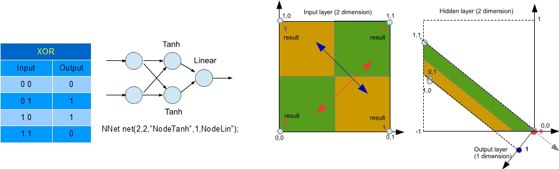

XOR function simulation
Like "Hello world" printed as first example of a new programming language explanation, XOR function is the basic test for a feed forward Neural Network implementation. XOR function is favourite because is simple but non-linear classification problem. In other words, it is impossible to group input that produce 0 and to group input that produce 1 separately, without any form of space distortion (i.e. non- linearity).

The Tanh function on hidden layer is responsible for space distortion and the last layer projects this new points arrangement to the correct result.
Example of sketch for XOR learning:
#include "NNet.h" //include library
float fxor[4][3]={{0,0,0},{0,1,1},{1,0,1},{1,1,0}}; // XOR function to emulate
NNet net(2,2,"NodeTanh",1,"NodeLin"); //NN instance
void setup() {
Serial.begin(9600);
Serial.print("Test NNet train V25\n");
int samples=40000; // number of training cycles
Serial.print("NNet train for ");
Serial.print(samples);
Serial.println(" samples...");
trainxor(samples); // training
net.printPROGMEM(); // save NN trained for further use
}
void trainxor(int samples)
{
float vin[2]; // input buffer
float vtr[1]; // train out buffer
float errq=0;
int k=samples/10; // step for error displaing (10 steps)
char sfloat[12];
for (int i=1;i<samples;i++) // training cycles
{
int r=random(0,4); // show examples in a random sequence
vin[0]=fxor[r][0];
vin[1]=fxor[r][1];
vtr[0]=fxor[r][2];
errq=errq+net.learn(vin,vtr); // learning
dtostrf(errq,6,5,sfloat);
if (i%k==0) // for each step show error average
{errq=errq/k;
sprintf(rec,"%d Errq: %s \n",i,sfloat);
Serial.print(rec);errq=0;
showXorFun();} // and the complete results
}
}
void showXorFun() // show the learned functionality of NN
{
float vin[2];
float vout[1];
float trn;
int err=0;
char sfloat[12];
for(int i=0;i<4;i++) // for each of 4 couple of inputs
{
vin[0]=fxor[i][0];
vin[1]=fxor[i][1];
trn=fxor[i][2];
net.forw(vin,vout); // compute Neural Network
int in0= vin[0]>0.5?1:0;
int in1= vin[1]>0.5?1:0;
int ou= vout[0]>0.5?1:0;
err=err+fabs(trn-ou);
dtostrf(vout[0],6,5,sfloat);
sprintf(rec," %d %d -> %d (%s)\n",in0,in1,ou,sfloat);
Serial.print(rec);
}
}
void loop() {
// not used
}
You can train NN on Arduino because it is a task not so hard (from 20000 to 50000 training cycles depending on random weights initialization). You can find a similar sketch into the example subdirectory of library.
Then if you want use NN trained and saved, this is an example of sketch:
#include "NNet.h" //include library
const PROGMEM struct // NN description previously saved
{
int dimin=2;
int dimhi=2;
int dimou=1;
int fun1=2;
int fun2=0;
float wgt10[2][2]=
{{-0.45, -0.45},{-1.89, -1.90}};
float wgt21[1][2]=
{{1.54, -1.50}};
}pnet;
void setup() {
Serial.begin(9600);
Serial.println("Verify XOR functionality (NNlib 2.5)\n");
float vin[2];
float vout[1];
NNPGM np; // np: pointer to NN PROGMEM structure
np=NNet::initNetPROGMEM(&pnet,false,false); // Initialize NN structure PROGMEM
vin[0]=0;vin[1]=0;NNet::forwPROGMEM(np,vin,vout); // NN use (static function)
Serial.print("0 0 -> ");Serial.println(round(vout[0]));
vin[0]=0;vin[1]=1;NNet::forwPROGMEM(np,vin,vout);
Serial.print("0 1 -> ");Serial.println(round(vout[0]));
vin[0]=1;vin[1]=0;NNet::forwPROGMEM(np,vin,vout);
Serial.print("1 0 -> ");Serial.println(round(vout[0]));
vin[0]=1;vin[1]=1;NNet::forwPROGMEM(np,vin,vout);
Serial.print("1 1 -> ");Serial.println(round(vout[0]));
}
void loop() {
// not used
}